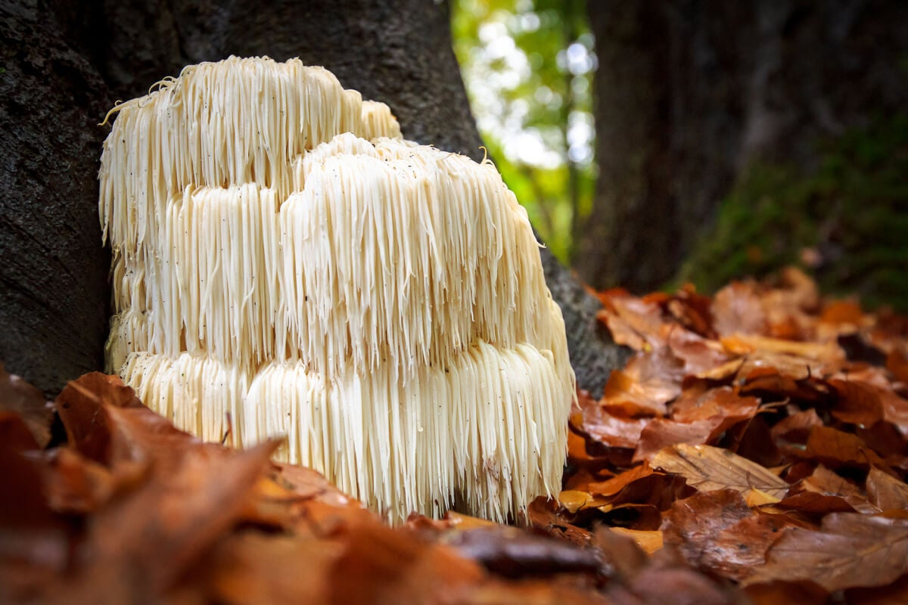
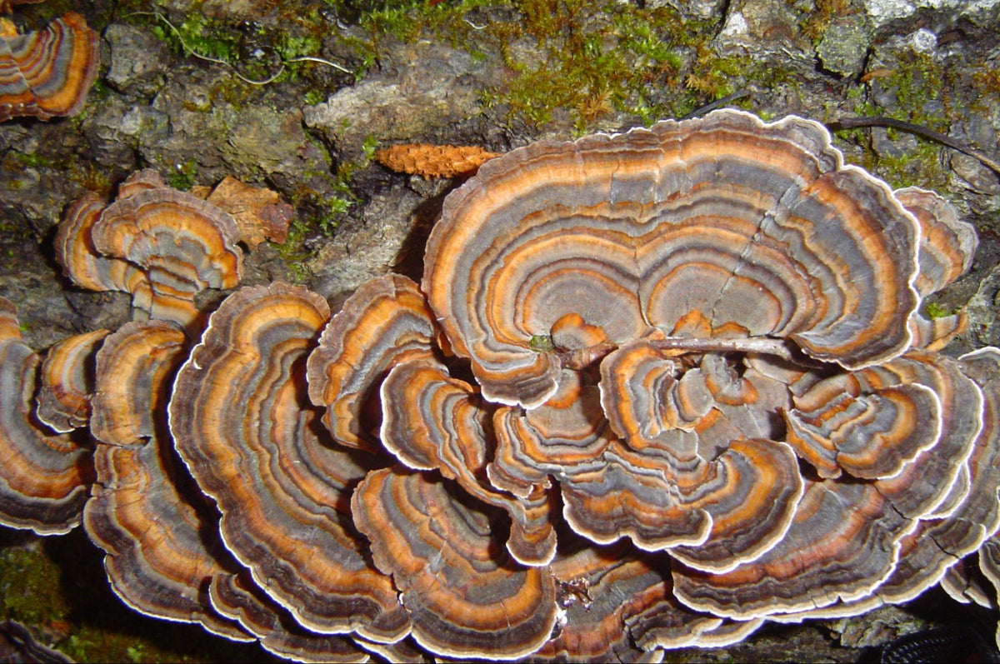

Los hongos para comer son alimentos carnosos y ricos en fibra, vitaminas, minerales y algunos aminoácidos esenciales.
USO GASTRONOMICO
USO MEDICINAL
Los hongos medicinales son hongos que se usan como medicamentos. Los hongos se han utilizado por cientos de años, sobre todo en los países asiáticos, para tratar infecciones. Hoy en día, también se emplean para tratar enfermedades pulmonares y el cáncer. En Japón y China, hace más de 30 años que se aprobó el uso de los hongos medicinales como complemento de los tratamientos estándar contra el cáncer. En estos países, los hongos se han utilizado sin peligro por mucho tiempo, solos o en combinación con la radioterapia o la quimioterapia. Los hongos son conocidos por su notable densidad de nutrientes. Entre los ingredientes más importantes se encuentran varias vitaminas, minerales y los llamados polisacáridos, de hecho una sola especie puede tener más de 100 sustancias bioactivas. Los hongos medicinales también tienen propiedades adaptogénicas. Los adaptógenos son sustancias naturales que se encuentran en ciertos hongos y plantas y que tienen un efecto equilibrante y regulador en el cuerpo humano. Además, contienen ciertos ingredientes que actúan como agentes quelantes, que son capaces de adherirse a los metales pesados y otras sustancias presentes en el organismo para ayudar a su eliminación.
Algunos de los más comunes son los siguientes:
Ganoderma lucidum (Reishi) :
Es uno de los hongos vitales más antiguos y utilizados con mayor frecuencia en la MTC. El hongo Reishi es también conocido como el "hongo de la eterna juventud" ya que protege la piel del envejecimiento, fortalece el sistema inmunológico y apoya la función de la memoria. También puede tener un efecto positivo sobre el insomnio, la ansiedad y el nerviosismo. Se utiliza para el llamado mal de altura o de montaña, en el que se presentan síntomas como dolores de cabeza y náuseas debidos al descenso de la presión atmosférica a grandes alturas. Además puede ayudar a reducir la presión en casos de hipertensión, y tiene efectos antiagregantes y vasodilatadores que pueden ayudar a mejorar la circulación sanguínea, disminuyendo el colesterol, por lo que es un gran aliado para la salud cardiovascular.Auricularia (Auricularia auricular judae) :
Éste hongo, también conocido como "oreja de Judas", contiene un polisacárido que tiene un efecto inhibidor sobre la coagulación de la sangre. De este modo, protege el sistema cardiovascular, aumenta el flujo sanguíneo y previene las obstrucciones vasculares. También es utilizado como hongo comestible en la cocina asiática.Cordyceps militaris (Cordyceps) :
El Cordyceps militaris es uno de los antioxidantes más poderosos presentes en la naturaleza, gracias a la presencia de cordicepina, una sustancia natural, tiene un efecto comparable al de los antibióticos, lo cual se ha demostrado en múltiples estudios. También se sabe que el hongo Cordyceps tiene un efecto positivo sobre la fatiga y el agotamiento, además puede ayudar en contra de la impotencia en los hombres y en la infertilidad en la smujeres, por este motivo es también llamado "El viagra del Himalaya".Hericium o Melena de León (Hericium erinaceus) :
El hericium o melena de león tiene propiedades antiinflamatorias y digestivas y ayuda a la regeneración de la mucosa intestinal, protege al estómago y promueve su curación. También tiene propiedades inmunoestimulantes, promueve la formación y repara las células nerviosas, estimulando la memoria y las funciones cognitivas.


USO RECREATIVO
Existen cerca de un centenar de hongos que contienen proporciones variables de psilocibina y psilocina. Es una sustancia que el cuerpo asimila sin dificultad y no se han demostrado capacidades adictivas, aunque si presenta una tolerancia destacable.
Dependen de la especie. Las formas más habituales de consumo son:
Vía oral y fumada
Sus efectos:
- Empiezan pasados unos 30-45 minutos desde la ingestión y pueden durar entre 6 y 8 horas.
- Los hongos alucinógenos contienen psilocibina, un compuesto químico que, al ser digerido y transformado en psilocina, produce experiencias psicodélicas y un estado alterado de conciencia. Los efectos emocionales subjetivos pueden variar desde la hilaridad hasta un aumento en la ansiedad. Además, el consumo de hongos alucinógenos puede provocar náuseas, vómitos, incomodidad abdominal, descoordinación y dilatación de pupilas. También es posible que se produzcan alucinaciones visuales más complejas con los ojos abiertos o cerrados, pero pocas veces se confunden con la realidad. Es importante tener en cuenta que los efectos de estas sustancias dependen completamente de la forma en la que se consuman, las características físicas del consumidor (edad, estado de salud) y otros factores.